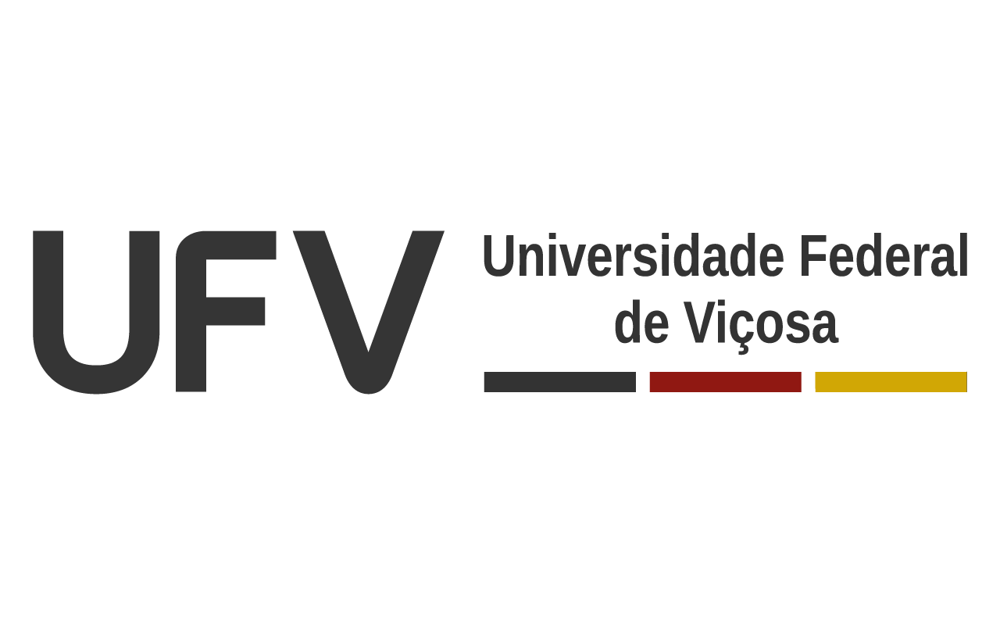

Olá, meu nome é João Vitor Leite Silva.
Sou natural de Patos de Minas – MG e cresci em Rio Paranaíba – MG.
Tenho interesse em oportunidades de estágio na área de desenvolvimento backend.
Busco oportunidades que me permitam desenvolver minhas habilidades técnicas, adquirir experiência prática e evoluir profissionalmente na área de tecnologia.
Atuei como estagiário durante 6 meses na área de Análise de TI, prestando suporte técnico (helpdesk) para empresas de diversos segmentos.
Durante o estágio, desenvolvi habilidades em sistemas operacionais, Microsoft 365, análise de logs de eventos e infraestrutura de redes.
Após o período de estágio, fui efetivado como Analista de TI Nível 1 na TSMIT Tecnologia e Inovação. Durante esse período, desenvolvi habilidades relacionadas à administração de servidores, manutenção de hardware e configuração de equipamentos de rede, como Starlink, UniFi e roteadores Huawei. Também adquiri experiência com Windows Server, Linux e com a gestão de infraestruturas de redes corporativas, contribuindo para o funcionamento e a estabilidade dos ambientes tecnológicos atendidos.

Estudante de Sistemas de Informção durante 4 periodos na UFV-Campus Rio Paranaíba.
Desenvolvi experiências em lógica de programação, desenvolvimento na linguagem C e engenharia de software.
Atualmente, estou cursando Sistemas de Informação no UNIPAM, onde tenho desenvolvido conhecimentos em desenvolvimento web, hospedagem de sites e utilização do GitHub para controle de versão e gerenciamento de projetos.